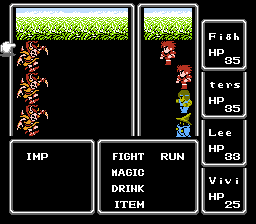
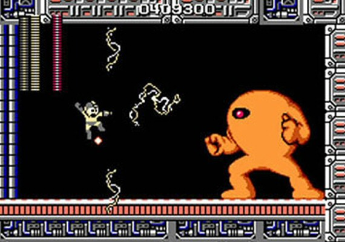
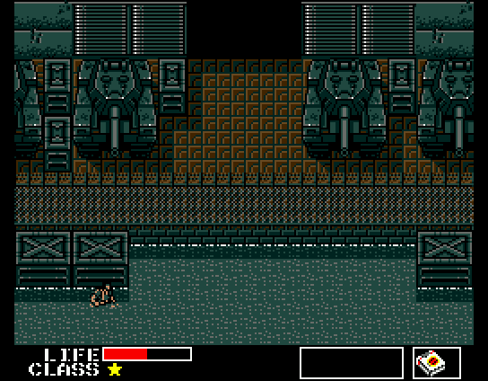

>
Nace Final Fantasy. El juego salió a finales de 1987 y supuso tal éxito que Sakaguchi tuvo que abandonar la idea de dejar este mundillo, provocada por el periodo de crisis anterior. Desde ese momento se puso a desarrollar nuevos Final Fantasy.
Esta saga alcanzó su apogeo en 1997 con la salida de Final Fantasy VII, que dio a conocer los RPG a mucha gente que no sabía ni de que se trataba el género.
<

>
Llega MegaMan. En un principio fue creado para salones recreativos, pero
finalmente acabó saliendo para la Famicom/NES. El niño robot es creado por el Dr.Light. En el juego podemos ver como el Dr. Wily roba 6 de los robots creados por el doctor Light (los Robot Masters), que serían los jefes finales de cada fase.
<
>
Hay que destacar la salida en este año del primer Street Fighter, que no cosecharía demasiado exito hasta su segunda parte.
<

>
Se publica el primer Metal Gear, diseñado por Hideo Kojima. Apareció en principio para MSX, pero poco después Konami publicó una versión para la NES, con algunos cambios (los fondos de pantalla habían cambiado y también cambió un
poco el argumento). En el juego encarnamos a Solid Snake, un soldado de FOXHOUND, con la misión de infiltrarse en la fortaleza Outer Heaven para recuperar a Grey Fox.
Snake acaba descubriendo, dentro de la fortaleza, una arma llamada Metal Gear. Nuestro personaje empieza la operación sin ningún equipamiento e incluye el códec (ingrediente básico de la serie).
<